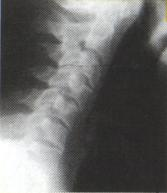
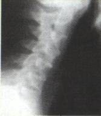

Auto Accidents
I was in a car accident and my neck and back were in very
bad shape. I also had head tremors. My neck and back have improved a great
deal. I feel so much better. As for the tremors, they have improved a lot also.
My nephew and his wife are chiropractors and they made a comment on my tremors.
I must have a very good chiropractor, for they hardly notice my tremors anymore."
-B.W.
Injuries to the neck caused by the sudden movement of the head -- backwards, forward or sideways -- are referred to as "whiplash." The resulting instability of the spine and soft tissue can result in headaches, dizziness, blurred vision, pain in the shoulder, arms and hands, along with a reduced ability to turn and bend. These symptoms may not appear for weeks or even months. Specific chiropractic adjustments help to reduce pain and increase spinal function, motion and position of spinal bones. Consult Dr. Vactor before enduring a constant pain or having to depend on addictive pain medications.
Stages of Spinal Degeneration

Near normal: Natural curve maintained with no misalignment.

Phase one: The misalignment of the spine is usually the start of degeneration.
Usually this exists without warning or symptoms.

Phase two: Bone spurs and rough edges develop on the vertebrae as a result
of calcium growth.
Normal joint movement is impaired. Pain or other symptoms
may or may not be present at this phase.

Phase three: A lifetime of neglect can result in a fusion of spinal segments.
Permanent nerve damage,
reduced ability, and impaired function are often the
result with little chance of correction.
Please Contact Us for More Information
or to Set Up Your Free Consultation